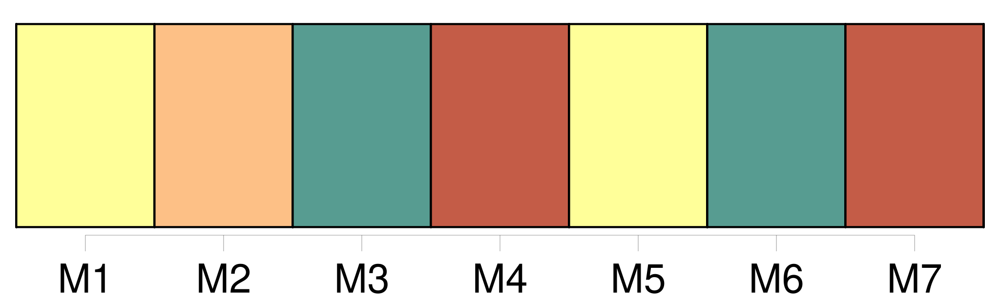
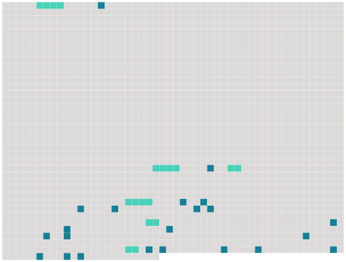

Longueur nb maillons : 28 mentions |
 |
Les autres notables étaient : [le comte de Faverges] , autrefois député, et [dont] on citait les vacheries ; le maire, M. Foureau, qui vendait du bois, du plâtre, toute espèce de choses ; M. Marescot le notaire ; l'abbé Jeufroy, et Mme veuve Bordin, vivant de son revenu. [57 phrases] D'abord, il fallait voir comment on opérait chez les autres ; et ils rédigèrent une lettre, où ils demandaient à [M. de Faverges] l'honneur de visiter [son] exploitation.
[Le comte] leur donna tout de suite un rendez -vous. [10 phrases]
[M. le comte] s'avança suivi de [son] régisseur. [Il] avait un costume de basin, la taille raide et les favoris en côtelette, l'air à la fois d'un magistrat et d'un dandy.
Les traits de [sa] figure, même quand [il] parlait, ne remuaient pas. Les premières politesses échangées, [il] exposa [son] système relativement aux fourrages ; on retournait les andains sans les éparpiller ; les meules devaient être coniques et les bottes faites immédiatement sur place, puis entassées par dizaines. [2 phrases] [Le comte] demanda d'où venait cette enfant ; on n'en savait rien. [1 phrases]
[Il] haussa les épaules et, tout en s'éloignant, [proféra] quelques plaintes sur l'immoralité de nos campagnes. Bouvard fit l'éloge de [sa] luzerne. [1 phrases]
Vu le nombre de [ses] bestiaux, [il] s'appliquait aux prairies artificielles ; c'était d'ailleurs un bon précédent pour les autres récoltes, ce qui n'a pas toujours lieu avec les racines fourragères.
— Cela du moins [me] paraît incontestable. [4 phrases] — Ici, dit [le comte] , [je] sème [mes] turneps.
Le turnep est la base de [ma] culture quadriennale. Et [il] entamait la démonstration du semoir. Mais un domestique vint [le] chercher.
On avait besoin de [lui] au château.
[Son] régisseur [le] remplaça, homme à figure chafouine et de façons obséquieuses. |
 |
Il est possible de télécharger la ressource sur la page Ortolang |
Si vous avez des questions ou vous voyez des erreurs, merci d'envoyer un mail à silvia.federzoni89@gmail.com |